![[ TABLE OF CONTENTS ]](../gx/indexnew.gif)
![[ FRONT PAGE ]](../gx/homenew.gif)


Fall Internet World 98
A View From the Show Floor
By Stephen
Adler
I just experienced my first big league Internet show. And was it a doozer.... The show was titled 'Fall Internet Show 98' and it took place in New York City's Javits conference center. There was a 4 day 'vertical' track on TCP/IP which was one of the motivations for going to the show. The other was to meet the commercial Linux people in person. So what follows is a 'diary' of what I can remember of the show.
Day 1) I live on Long Island NY and I have to take a 1.2 hour train ride in order to reach the Javits convention center where the show is being held. My day starts by getting up at 5:45 am, taking a quick shower, and trying to get to the train station, a good 30 minutes from home, by 6:30am. This first day, I got a call from the experiment where I work, telling me that data cannot be collected. I'm the DAQ guy. I figured I would drive by work, fix the DAQ problem and continue on to the train station. The problem 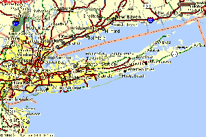was minor, but I missed the 6:30 train I wanted to take and ended up on a later train. What was the rush? According to the Fall Internet World 1998 web page, the keynote speakers were to start on Monday at 9am and I still had to register. I wanted to get into Javits, register and get a good seat for the keynote. I was rushing to get to NYC. The train ride in was uneventful. The weather was fantastic. 70 odd degrees that day, clear blue fall skys. Getting into Pen Station and out onto the streets of NYC, on a bright clean crisp fall day is hard to explain. You have to experience it yourself. Javits is between 34th and 36 or 37th street and 11th Ave. Pen Station on about 8th and 33rd. So I take off west, down 34th searching for Javits. I've seen it from the outside a long time ago and I'm not really sure where to find it. Found it, hard to miss. And yes, there was some kind of computer show going on there. The front of the convention center had these large banners draped with some message from Hewlett Packard for all to see. There were some other banners draped in front of the building which I cannot recall now.
In I go expecting to see thousands and the place looks rather empty.
I peer into the show floor to find boxes and crates unopened all over the
place. "Gee", I think to myself, "They have a lot of work to do in order
to get setup for today". I go over and registers, there is no one in line.
And again I think to myself "This is weird, the place is dead". I was worried
that I would miss the key note address of John Gage, some
science guru working for Sun. Well, it turns out that the show is really
to get going on Wednesday. Ha, this explains all, I'm rushing around for
no purpose at all. The good thing was that the sessions I wanted to attend
did start today so waking up at 5:45am was not a complete waste of my time.
Now all I had to do was blow off 1 hour waiting for my session to start.
In the mean time, I went to get a cup of coffee from one of the show vendors.
I spent 5 bucks on an oversized coffee and muffin. The coffee these guys
sold me was so charged up, that I ended up running to the bathroom to pee
at every break in my session.
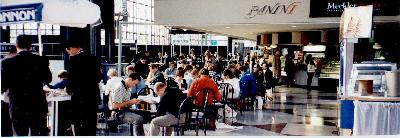
10am finally rolled around, I went to my session titled 'The Infrastructure of IP' or something like that and spent the rest of the day listening to a rather polished man, (polished in appearance,) telling me about IP. I knew about 70% of what he was telling me and was gland to learn of the other 30% of which I've heard of but never knew the details. (What exactly is a class A, B, C, D or E type network and the details of the why's and whereof's of DHCP, a rather new protocol to replace bootp, (new in that I've just heard of it when RedHat 5.1 was released)) The other stuff he covered I cant remember now. What I remember most of this session was that this guy reminded me of a tele-evangelist. First off, the guy wore a very nice suit. You can't blame him, its his job, and working in the private sector, you have to look good. He worked for a training company and this explained why, at least I assumed why, he presented his material as he did. His style was as follows. 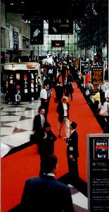His presentation tool was power point, jazzed up with animations. The slide could not just pop up. The letters had to roll in, high light streaks had to streak in, the bullet items came in, rolling in one after another with a nice time delay between bullet items of several seconds. Very slick. He would present his material in a way which was supposed to make you feel good about what you were listening to. He kept asking questions, not for the sake of the question, but to get the audience involved. He would walk up and down the isle talking about IP headers, the OSI networking model and always interjecting, "Do you feel comfortable with that? Is it all coming together now?", all the while I'm getting this weird feeling that I need to yell "Amen, the TCP/IP God is great and forgiving".
This went on for the rest of the day. Sitting inside this small room listening to the wonders of IP. At one point, I decided I needed to get out and look around a bit to see what the rest of the conference attendees were engaged it. I poked my head into one room, about 4 times the size, full of people, talking Web marketing strategies. I mean it was full. This pointed out to me one fact about the internet. Very few know how it really works, and the rest are trying to cash in using browser technology.
Day 2) Since my session didn't start until 10am, I didn't rush to catch the train. Instead I took my wife to work, and then had to run and catch the last train which got into NY at 10am. Meaning I would miss the first 15 minutes of my session. That's OK. After sitting through about 6 hours of Tele-evangelism I figured I could miss the 1st 15 minutes of the "Integrating Unix and NT", or was it, "Making Unix talk to NT" or something to that effect. The idea being that you were to learn how to setup a heterogenous Unix/NT computing environment. I got the same guy from yesterday giving this session, great guy, but I couldn't take it anymore. He ended getting hung up on setting up a DHCP server on his laptop running NT. Hey, I can fill in a widget form thing with IP numbers too... I figured I had enough and that this time, I wouldn't learn much. I wanted to see what else was 'out there'. So I wondered over to the ISP session. There was an interesting talk on setting up VPN's. That was new to me. Virtual Private Network. I still don't understand why it's such a good thing. To me, it has a bit of a snake oil man's thing to it. Look, we can setup this 'tunnel' between sites on your enterprise. Its secure, it uses the internet, it drives costs down. And I'm thinking to myself, "Well, I've got secure shell on my PC at home, if I've got secure shell on my PC at work and I ssh between the two, I must have a VPN!". I'm pushing the forefront of internet technology without even know it. I guess VPN's are for those who don't have access to ssh. Hmmm... I paid $0 for ssh, I wonder what it costs to setup a VPN? Do the ISP's give it away? I wandered from the ISP session to the Telephony session. I learned about VPN's in that session too. Here, there was a slick woman from 3Com who had even slicker .ppt files to dazzle you with. These .ppt files were in full animation. Cartoons would pop up and disappear, text would flow, arrow and pointers swooshed. I hope I don't get a .ppt deficiency complex next time I present my all too static transparencies. (Transparencies.... (yes I do code in Fortran more often that I would like to admit. But I have written some c++ code, a crude as it was...))
Lunch came next. The day before I got a hotdog from a vendor across 11th avenue for $1.50. With soda it cost me less than $3.00. Today, I got into the cafeteria line, pulled a rather bland ham and cheese hero looking thing from a shelf, a bag of chips and a soda. $10.00!!!! I grunted as I pulled out a $10 bill from my wallet but the cashier didn't seem to care. (Its not her fault I'm stupid.) I wandered around the tables, found one where only one guy was sitting at a table which fit 4. I sat down and munched away. After some time, I got to talking to the guy. He was a chap from Israel with a T1 connection out of his house and a 45Mbit connection coming in! Talking about an asynchronous plug into the Internet. My god. This guy was into testing some on demand DVD video app into his house. We'll, I'll be waiting form my 45Mbit connection coming from Bell Atlantic soon. Yea, real soon. It took 9 months to get ISDN into my house after Bell Atlantic, when they swore up and down it would be 3 weeks tops. Using Adler's law of monopolistic trends in hi-tech, I give Bell Atlantic 20 years before I see 45Mbits into my house, even thought this guy has it *now*. (I'll have more sarcastic comments on this topic later...) Ok that was lunch. I decided to blow off the rest of the Unix/NT session. At this point I cant remember very well what I did. It's all getting rather blurry. I do remember the last session I went to on day 2 of the conference. It was titled "The governance of the Internet" and was a panel of a bunch of rich guys discussing how the government should not intervene with regulating what is deployed on the internet and how its deployed. The unfortunate part was that too much of the discussion centered on 'adult material' with eyes rolling up on each mention of that dirty subject.
Day 3) Finally, the first day of the real conference. I got up at 5:45 am, and rushed off to catch the train. The 7:05 express got me in about 8:30 which would be enough time to walk over to Javits and catch a good seat for the morning key note. The deliverance of this keynote really set the stage for the next two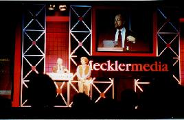 day's of this conference. The key note took place in the 'special events hall'. A large auditorium with a low sealing which could seat about 1000 people I estimated. The stage was setup with 4 projection size TV screens. (20 feet high by 30 feet long, I don't know if I have the aspect ratio correct there, but they were big) Above the speakers podium was another regular TV which must have been at least 48'' in size. The props which fit between these screens were black with fluorescent thin geometric design. (Predominantly orange fluorescent tones) As I walked in, some rather hyped rock and roll music was playing. Fast beat music. I'm glad I didn't have a cup of the coffee they served there in the Javits food stand because between the caffeine overdose they serve and the rock and roll, I would have shot out of my chair. So there I wait, rock and roll in the back ground, cool fluorescent stage props in front and tons of MecklerMedia adds on the TV screens, (All 5 monster screens of them). The music let up, the screens went blank and the show was about to begin. The first 2 or 3 minutes was dedicate to a rather glizy add of Sun Microsystems. More rock and roll, the 5 screens lit up with MTV style imagery dedicated to promoting Sun. After that, some rich guy, (member of the overclass), comes out and introduces himself. 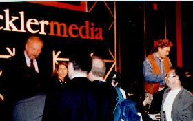(Head of MecklerMedia, the sponsors of the show.) He eventually gets around to introducing the keynote speaker, John Gage. John, from what I can tell, has a science background. I would assume he has a Ph.D. in physics or something since he is the science liaison for Sun Microsystems. Being that I'm a scientist, I figured this would be a good chance to see what us science guys are doing to help internet technology. He gave a very good talk. In the end, he ended up promoting Sun's alternative to corba called jini. And no, its not in the public domain. John had some guy who seems to be involved in the development of jini come out and tell us what jini is and how it would affect the world. The appliance world that is. Jini was going to be, dare I call it the OS, which runs in your cam-corder, cell phone, PC, coffee pot, refrigerator, steering and breaking system in your car, landing gear in the next plane you fly, in the stop light at your closest busiest intersection, in the elevator in the World Trade center... Wait, is this a Really Stupid Idea!!!! This is nuts!!!! I don't want my car's breaking system to be on the Internet! No Way! It's going to be break-in city. All the hackers (I don't mean to give all hackers a bad name) who dedicate themselves to testing system IP vulnerabilities are going to have a field day. I am sure there will be a web page with the IPv8 address of my breaking system and the buffer overflow code which you can down load into this jini thing in my breaking system which will cause the breaking system to invert. Instead of pushing the peddle in my car to break, I'll have to push the break peddle to release the emergency breaks in my car. Good grief, I thought the year 2K freaks were crazy about the end of the world. Jini will end it all. After this jini guy finished talking about the object'ivity of this code, (you should have heard him rant. "This cam-corder is an object. Its got methods! The record method. The 'upload your data' method") all while he was staring intently at the cam-corder. It was if he was looking into and beyond the cam-corder into every appliance on the internet, including the breaking system of my car. John finished off his talk in a brilliant fashion. he pulled up the 'coolest taxi in Colorado' web page for us to see. Some guy, I can't remember where in Colorado, has wired up his cab to the internet. the interior of his cab is totally wacked out. Its got a full complement of musical instrument, drums, key board, amplifiers etc. as well as some digital camera which he used to take pictures which he uploads to his web site. Here check it out. Click here.
After that bit of excitement I decided to pace myself and go to some sessions before hitting the trade show floor. The problem is that I can't remember what sessions I went to. But I do know that I only went to one of them. Because it was after that I was soon on my way to checkout the RedHat booth. My main calling to this show was to meet the RedHat team.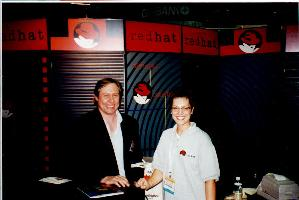 I wouldn't call my self a Linux fanatic, maybe just an enthusiast. And I've gone through about 50 installations of RedHat on one machine or another since I started using it in the spring of 1996. I've been following the growth of RedHat somewhat on a daily basis since then and I've seen that they tour the world, meeting LUG groups and what not. So, needless to say, I did have a peak of curiosity to meeting someone from RedHat in flesh and blood. My search for the RedHat booth was frustrated by the poor documentation provided by the show. I went to the first floor, looking for booth 3368 or something like that and found this empty booth space in the far back reaches of the first floor show area. I then found out that they were on the second floor. This was good since this was the main show area. Then I went to the second floor and wandered around looking for them. Again, the booth numbering is not quite random but close. I'm sure mathematicians have a name for its. Local Random Space, or local non-transforming functionals, who knows. I finally stumbled into them. There it was, the RedHat booth. I was expecting it to be mobbed by people, but it was not. It was rather empty. They had one or 2 PC's running RedHat Linux and the secure version of Apache. I went up and introduce myself to Melissa, the PR woman for RedHat, although she didn't want to refer to herself as a PR person. I guess there is some stigma attached to the PR departments of high tech companies which eludes me. Maybe is because I don't watch enough TV to see all the MS commercials. In any case, I told Melissa that I expected RedHat is going to get really big. I was curious to find out what was going on with the company. She told me that it was crazy right now. My guess is that the RedHat team is hacking late into the night. With the recent investment of Netscape, Intel and two venture capital firms, they are clearly booming. (I recently saw the announcement for two new positions at RedHat on their announcement mailing list.) As I stood round the booth, it was clear to me that people were continuously coming to the RedHat booth to ask questions. I was trying to stay out of their way. Or answer some questions for them if some people couldn't get to the RedHaters. After telling Melissa that I have a RedHat mirror site, she got excited and gave me a mouse pad and a poster. I hung around a bit more, found out that all the other Linux vendors were in the Oracle Partners pavilion. So I headed over there.
There I found the Pacific Hi Tech guy, the Caldera guy, the SuSE guys, and the VA guy. I spent some time with each. At that time, the VA guy was in a crisis situation. His PC had arrived broken. It was shaken up during shipping. Evesdropping in on the situation, it sounded like the disk drive was not properly screwed in to its bay and when the VA guy opened up the box, he found the system disk sitting on the bottom of the enclosure. 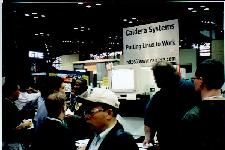After putting the disk back where it belonged, it wouldn't boot. At that time, there was some guy from RedHat, trying to figure out how to get it back up and running. It was tense. The RedHat guy had a bead of sweat coming down the side of his forehead while he franticly typed commands at the console trying to diagnose the problem. I've been in similar situations but not as bad has having my system dead on the show floor of a major Internet conference. Instead of standing around looking over his shoulder adding to his pressure, I told the guy good luck and took off for lunch. (I stopped by some time later, and the machine was running fine.)
Lunch. Two hotdogs and a soda. All for under $5. Much better. Thank you street vendor. (Hmm... I see parallels here between open and close source development and lunch with the street vendor and at the conference cafeteria.)
After lunch came the Oracle keynote given by the CEO of Oracle, Larry Ellison. The only time I've seen him before was on a very good documentary by this Cringly guy titled something like "The Revenge of the Nerds" which tracked historically the rise of the SV power houses along with MS. The pre Keynote show or add, was really intense. All 5 TV displays were in full swing throwing up graphics and images of Oracle and the Internet. The music was very loud and fast. The adrenaline rush was mounting. After about 5 minutes of this extremely intense pitch, the noise gave way to silence. Then someone from the audience shouted "LOUDER!". Everyone laughed. And out came the CEO of Oracle. I don't know if he caught that, but I would have been rather emberassed. So off he goes ranting and raving about the future of computing. He ragged as much as possible on Microsoft. (There was an article in the NYTimes which talked about NT servers in every Burger King or McDonnalds and he thought that was a bad idea.) He then went to describe the power of the internet and how his product was going to take advantage of it etc etc... Its hard to take so much promotion of someone's software. The one thing that irked me was that he was confusing the internet with the browser. He kept saying things like, "You can access our database on the Internet" and he popped up Netscape and ran through some demo. I have a feeling that either he figures that the regular joe mo user considers the browser as the Internet or he is a regular joe mo user who doesn't know the subtleties of what he was ranting and raving about. In any case, while he was stepping through his demo, which was running on an iMac, the app froze and there was a frantic rebooting of the machine. The Orcale guy was able to talk his way through the rebooting of the poor iMac. This is life at the bleeding edge. Even Larry Ellison as to bleed a little.
After the key note, I turned my attention to a session titled, "Getting the most out of the Mozilla source code." Cool, open source, finally something about the real future. The guy who talked impressed me. He was an African guy who waxed well about web page development. I was glad to see that the field of Internet technology was not completely dominated by males of protestant/european decent. The session that followed was by some guys from real.com (I think the name has changed) who talked about audio and video compression. The topic of the session being multimedia in your browser. The technical stuff they covered was good. I can now claim to be an expert in audio and video compression. I know the jargon words, compress, equalize, encode, decode, key frame, mpeg, and so on and so forth. With that, I can bullshit my way through any multi-media discussion.
I lost patience with the conference sessions and decided to go back
to the show floor, Instead of rushing off to the RedHat booth in mere panic,
I scouted out the various setups put up by all these forefront companies.
The companies who rented real estate from Javits was a who's who of my
life blood. HP, Sun, SGI, IBM, Motorola, Cicso, Microsoft, Bell Atlantic,
Computer Associates, O'Reilly, Oracle, Sybase, and on and on. The Big players
had Big booths and just as in the real world, the real estate proverb of
"Location, Location, Location" applies equally well here. All the companies
with big bucks were positioned right in front of the several entrances
to the main show floor. IBM bought the best spot, they were just behind
the main entrance. Microsoft had the second best spot, which was just to
the right of IBM. It's hard to describe the impression of some guy who
has never seen this kind of presentation before. Its BIG, Its LOUD, its
FLASHY, its CATCHY, its MTV, its exhausting. These Fortune 500 booths all
had big audio/visual displays advertising their merchandise. All screens
were BIG. Those cool Sony TV's where you put 9 or 16 of them together in
an NxM array and together they make up one big TV screen were all over
the place. IBM must have had 1/2 a dozen of these arrays setup. The detail
setup of all these booths has been lost from memory. Some exceptions linger.
First, is Motorola's Digital Diner.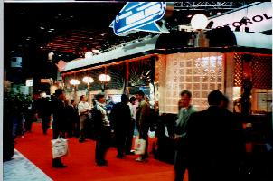
Forget the elaborate array of video technology (gadgets), Motorola I think
out did everyone with their Digital Diner. As I strolled around the floor
trying to keep my mind from exploding from information overload, I saw
this diner looking structure with a bunch of people standing around rather
captivated by what was going on inside. I got a closer look and it took
a bit of focusing, (I'm brain is fighting these peak levels of information
infusion) and I realized that inside this diner, is a restaurant mockup
with a full Broadway cast singing and dancing to the hand full of show
attendees who caught a seat at one of the booths inside this Digital Diner.
They are sing and dancing to the Tune of IP Telephony no less. The cast
was a hoot. They had a cop, some sales guy, and 3 waitresses. And sing
and dance they did. From the outside of the booth, you could not hear the
music or what they were saying, but the visual of waitresses dancing around
with coffee pot and mug in hand, with those head held microphones was just
too cool. 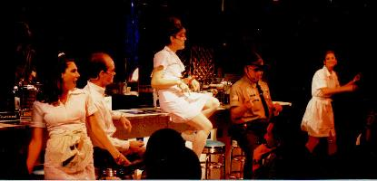VIVA
New York City! (My guess is that the cast is from Pasadena and they tour
the country going from Internet show to ISPCon singing and dancing the
IP Telephony tune, but NYC is the center of the Universe for Broadway shows,
and seeing this kind of production in Javits was special. At least to
me....) 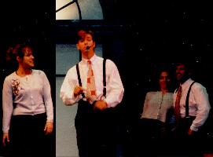Not
to be out done, the folks at Computer Associates had their own production
going. Their theme was Jazz, and the stage was a funkie bar/cabaret setting.
Here they had a couple with the familiar head held mics, dancing around
singing about CA solutions for your corporate enterprise. They were supported
by another couple with no head mics but just danced around. Again, a type
of 50's be-bop as was going on in the Digital Diner. Very entertaining.
Trying to compete with this kind of message delivery were other booths
of smaller, lesser known (at least to me) companies were Magic shows, guys
on unicycle juggling swords. You thought Central Park on a sunny summer
afternoon was a zoo, then you haven't been to an Internet show lately.
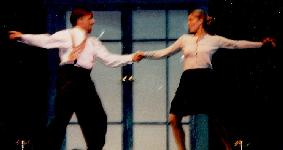 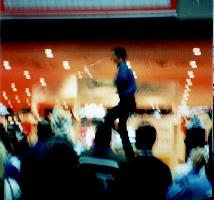
While wondering around, I got the both number for the NY LUG named LXNY. Strange acronym for a users group. They were located on the first floor show area way in the back. They could not have 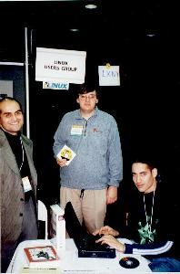been further removed from the action. Ok, local users group, no money, perfectly understood. I introduced myself to the guys, signed up to their mailing lists and hung out for a chat with them. The guy in charge seemed to be a reasonable chap. He tells me he is a perl nut, or something to that effect. Cool, definite open source kind of guy. There was another guy working on an install of SuSE on his laptop. I peered over his shoulder and saw some of the installation pages as they flashed by while he selected this or that to be installed. Looked nice, a bit more polished than RedHat's install. There was another chap who told me how he partitioned his disk, (all wrong according to my rule of partitioning disks, (/, swap and /home and thats it...)) Then there was another guy who sported an old red baseball cap with the RedHat logo on it. Looked rather well worn. He had a scruffy beard, and we talked a bit. He told me that he knows Eric Raymond, the guy who wrote that "The Cathedral and the Bazaar" net-paper, from some Sci-Fi shows. He then goes on to tell me about his political slants. He's a libertarian. He tells me that he and Eric, when not talking about open source, talk about politics and guns. "Guns?" I say. Yes, guns. He then asks me if I believe in the first amendment. "Yes", I say. "Do you own a gun?", he asks. "No", I reply. "Then SHUT UP!", he snorts. Yup, guns and the first amendment go hand in hand. He continues to tell me how the 10 amendments have been eroded by the 'Government'. It's hard for me to carry on a conversation with this guy. Especially when it turns to Y2K and stocking up provisions for the aftermath.
Day 4) Up and at'em at 5:45am. The day turns out to be rather gloomy with rain forecasted. By now, my commuting routine is getting fine tuned. I got to the train station in time to leisurely buy my round trip ticket, coffee and bagel and have 1 minute to hang out on the train platform watching all the other commuters who had equally well tuned commuting skills. Getting to Javits, I go directly to the special events hall to hear the keynote which will start in about 10 minutes. The ambiance is much more subdued. The usual MecklerMedia add stuff on the now more mundane 5 screens rolls on unnoticed. (Its amazing the capacity of the brain to adapt to new levels of sensory filtering.) The speaker was the Chairman/CEO of AT&T, C. Michael Armstrong. What he had to say was rather boring compared to the previous two speakers. He had no gizmo to show off, or web pages to surf too. He basically announced one thing, the intent of AT&T to take over the internet as we know it. Fair enough. He boasted the recent $48e9 acquisition of TCI. He waxed about the quality and quantity of future AT&T cable modem services. In all, he came across as the most fine tuned image projecting CEO that I've met. (The only other CEO being Larry Ellison.) Still, I was rather amazed at the skill of this guy to project the image of Stability, Strength, Leadership. By the end of his speech, I wanted him to my grandfather. (Not for the money mind you.) I recently met NY's senator from Long Island, Al D'Amato. Al is on the opposite end of the spectrum to the CEO of AT&T. When I met Al, the bit which struck me the most was his total arrogance at the people around him and at the same time his attempt to try and look caring. He would crack a forced smile when meeting the audience he was going to speak to. When the cameras were on him, that forced smile would pop back into his mouth, and all the while, we would have this strange glare in his eye, trying to asses every one he shook hands with. Needless to say, he blew me off when I shook his hand. (No forced smile for me.) But he did have lots of smiles for my wife who was also in the hand shaking line. (And a kiss on her cheek to boot!) In contrast, was AT&T's CEO. This man had depth. Being around him gave you a sense of solemn. He was a family man. He set the stage for his speech by telling a joke involving his granddaughter. After he established himself as a caring family man, with his joke, he plunged ahead with talk of how AT&T will be in everyones home delivering those internet services to you via TV. I guess the big difference between Al and this CEO is the amount of money they truly control. Al controls his campaign funds. He really has little control over the US government budget. In contrast, the CEO controls BILLIONS and is payed mucho more for it than Al gets for voting in the US senate. So, the law of capitalism dictates. You get the Al D'Amatos to run the country and the C. Michael Armstrong's to rule the world!
After the keynote, I decided to take a break from the show floor and the TCP/IP sessions I came to attend, to listen to a discussion on the 'Adult Entertainment Industry' put on by the "Investing in the Internet" session. The session was well attended and the speakers were an interesting and diverse bunch in themselves. They had what I think was a technology consultant for Penthouse. They had some guy who recently wrote an article for Upside Magazine on the subject. Upside was sponsoring the session. They had a woman who owned her own adult Web site. And there was a guy from a research type firm who was trying to figure out how much money was being spent on adult web sites. The consulting guy for Penthouse when first. He groaned about the lack of payment for services rendered on these web sites. The researcher gave a short talk on how hard it was to figure out how much money was going into the Internet adult business. His conservative estimates, and believe me, from what he said are very conservative, is that close to $700,000,000 this year will be spent on guys looking a nude girls doing weird things to themselves and others. This is conservative. (i.e. looking at the volume of charges of 5 or so popular adult web sites.) Then the woman, owner of her own adult portal, raved about the wonders of the business. Its recession proof, it makes MONEY, (she broke even in 6 months, but she didn't say how much was invested up front), there are plenty of models waiting to get into the business. Its safe and virtual. And she thanked Bill Clinton for bring erotica into the main stream. She claims to have lots of brunets posing with cigars. One thing which annoyed me was this video camera which was filming this session. They had the audacity of panning the audience. I had to keep hiding behind the guy between me and the camera to make sure I would be seen on National TV watching this adult forum and then trying to explain to my boss why he should pay $1.4K for my registration fee. I know, its hypocrisy on my part, but that's just the way I am. So between dodging the camera pan of the audience and listening to panel mourn the difficulties of IPOing firms engaged in adult content I got out of the session with this urge to run off and make a billion in porn. Of course I'm not going to do so, but the guy sitting next to me will.
After my short diversion into the underworld of the Internet, I headed back out to the show floor. I had in mind lining up to get into the Digital Diner and perhaps get one of those Motorola burgers they were serving up. 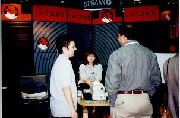(I do a lot of work with Motorola embedded real time systems, so that Motorola burger would have been a cool fixture on top of my 21'' monitor.) But first I wanted to stop by the SuSE stand to see if I could get a copy of their distribution. I had picked up Caldera's and Pacific HiTechs. Nope SuSE was still out and my guess is that they ran out on the first day and the talk of getting more SuSE CD's for distribution today was just hype. There was a lot of action around the Oracle partners pavilion where the minor Linux distributors were being hosted. So I stuck around. I've heard a lot of KDE and SuSE packages it with their distribution, so I was checking out what the SuSE guy was demonstrating. After a bit I got engaged with the SuSE guy. He introduced himself as Todd Andersen, the guy who claims credit for getting the term Open Source accepted as the new term to replace free software. What a character. His background is with the Department of Defense. He rattled on for about 30 minutes about the spooks in the CIA, how the NSA was a serious organization and other ongings of our defense industry which I was trying to grapple with. I'm not sure how Todd got into the Linux business coming from the Defense Department, I missed that part of his introduction. Being a fair minded guy, and the fact that I'm rather in the RedHat camp, I thought I would offer to mirror their site. I'm currently mirroring RedHat's and spent $1K of the governments money in doing so. (You need a large disk.) The disk is not totally full and being that SuSE is making inroads into the Linux mainstream, I thought it appropriate that I also mirror this site. Todd and Bodo, (Bodo is the guy with green hair as described by Dan Shaffer on CNET radio's "Project Heresy" broadcast of Thursday Oct 8, who came from Germany to help out their US SuSE brethren.) got all excited about this, after telling them that the lab I work for has a T3 connection to the internet. I then proceeded to show Todd my Linux resources web page I've put up for people at Brookhaven National Lab, or around the world as that goes, to get some advice on how to get Linux installed on their machines. Todd was loosing interest in my web page due to other show attendees coming around to checkout their very nice KDE desktop setup. I bade them firewell and took off to checkout how the RedHat booth was doing. Over at RedHat, they were fielding many questions from a hand full of people. RedHat was going to get another shipment of CD's which they were going to start giving out at 2pm. 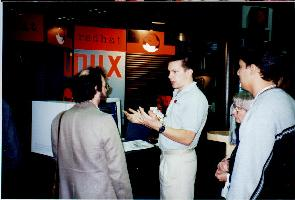I hung around with Melissa and some other chap who used to work for Los Alamos National Laboratory who got RIF'ed and is now playing a role in this leading edge company. He made the right move. He was also the guy who rescued the VA Research machine which arrived in a sorry state at the show. One side note I would like to mention is they guy from Adaptec who I met. As I was hanging around the RedHat booth, I heard some guy say he is from Adaptec. This caught my attention. To me, Adaptec is the premier provider of SCSI controllers for the PC/PCI market. Most motherboards you get these days have a built in Adaptec SCSI controller chip giving you an on board SCSI port, much like the on board IDE channel all motherboards today provide. With all the experience I've had installing Linux boxes, I've always run into the Adaptec kunumbdrum. Great hardware, but bad driver. I've had several instances where spanking new 23 Gig Seagate drives were attempted on a SCSI bus hosted by an Adaptec controller which failed miserably to integrate. My solution, forget the Adaptec built in Ultra Fast SCSI controller and spend $300 on a Buslogic SCSI controller. A sure win. Great SCSI hardware and an even greater driver to go with it. When I put my first Linux box together, I pondered the SCSI question. What controller. After poking around in the SCSI howto, I found that Leonard Zubkoff got direct support from Myplex to help write the driver, the decision to buy the Buslogic card was done. And true to the open source/Internet development environment, it was never more than 24 hours before Leonard would send me a patch to his driver when things went wrong. (At one point I had one differential card and one single ended card installed in my quad Pentinum pro box and things didn't boot right, and Leonard fix that problem quick.) So, back to Adaptec. Not too long ago I read a bit of news from the RedHat web page that Adaptec was going to embrace the Linux community, which meant that it was going to release the full hardware specs to the driver writers. Voila, I would finally count on being able to use all those on board SCSI controllers which I've had to ignore. But since ever since I read this great announcement, I have not been aware of any new Adaptec driver updates, so as far as I know. So, I gave this guy from Adaptec a my long story I just dump on you and he replied with some interesting inside info. First of all, we was not with the SCSI development team. This guy was a sys admin for Adaptec. But he did tell me that Adaptec has been going through some hard times. With its success in the SCSI market, Adaptec decided to diversify into a whole bunch of other high tech field, none of which they turned out to be any good at. He told me that the Adaptec stock peaked at $50 something a share and now was down around $5 or so. This has forced Adaptec to go back and concentrate on its core business. Along with that, he tells me that Linux is really big inside the company. He tells me that there are a lot of Linux peraphenalia, and he picked up the RedHat bumper sticker which lay in front of us and pretended to tack it on to an office cubical wall. "You see a lot of things like this, around the company", he said. Just like the rest of us, the Adaptec employees saw the light in Linux and my guess is that Adaptec's announcement to support the Linux effort came from a movement within the company. From the employee's themselves. I found that insiders view of Adaptec to be rather interesting.
Melissa told me that the RedHat CD handout was going to occurs at 2pm, being around 1:15 pm, I decide to go get lunch and then head for the afternoon keynote. 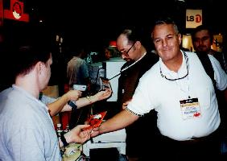It was raining rather hard so the hotdog stand was out and I had to spend lots of money on a rather simple barbecue sandwich in the overdone Javits cafeteria. From there it was on to the special events center where I waited for about 20 minutes for Jim Barksdale, the Netscape cheefo to give his view of the Internet world. I thought I was in for a surprise when the music which preceded the talk was a cool jazz piece. This is good, no need for super hyped up rock sounds beating your adrenaline system into hyper drive a-la Oracle. The problem was, as I found out within a few minutes into Jim's speech, he was a total bore. He lacked everything. No charisma, no attitude, no inner-drive, nothing. This guy reminded me of mashed potatoes. Netscape, as far as I'm concerned, is the only browser one should use. Maybe if there was a Linux port of IE, I would try it, but without that, there is nothing else which is graphically based. So, here he is, talking about The browser but has no charisma to put the punch into his presentation. I, along with the rest of the audience, was losing my attention for what ever message he had to deliver. The selling point of Netscape was the ability to type a key word into the URL field and the browser would 'find' the page you were looking for, and the 'what's related' button next to the URL field. He spent some time, too much time, plugging this feature. He then talked wonders of the customizability of the browser, either for ones own personalification or to setup some 'portle' for some company too lazy to higher a good webmaster with the proper Java skills to do the job right. At the end of his keynote, James took off without giving the change of the audience to approach him afterwards for a question or two and/or to exchange business cards. Another flop move. So be it for Jim. Although I could hardly sleep the night I found out that Netscape was going to release the source code via their Mozilla.org site. Jim hooked his wagon to the right company at the right time, nothing more. He talked about running Federal Express before running Netscape. Somehow I can't see the connection between the two companies except that there is something which went wrong here. Steve Jobs and Bill Gates grew up with the field, Jim Barkesdale seems to have dropped in like an uninvited guest. I guess its much the same as the guy Steve Jobs hired to run Apple who eventually dump Steve from Apple. Us technophites need to learn some lessons here.
After being let down by the Netscape keynote, I rushed back up to the
RedHat booth to see how the CD handout was going. It was going well. There
was a line of about 20 to 30 people long waiting to get a RedHat CD. I
took the opportunity to take some pictures of the line of Linux users to
be. With that, I wished the RedHat team good luck in there endeavors and
took off to my last session, "Migrating to IP version 6." This session
was given by two IBM consultants out of North Carolina. My first tag team
seminar with that same tele-evangelist delivery. IPv6, Amen!
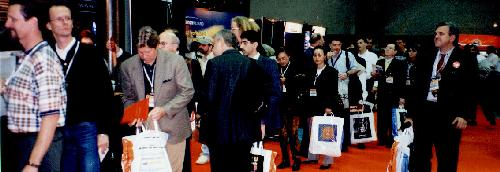
I was expecting the session to go until 5:30 but ended an hour earlier.
I was planing to then roam around the show floor a bit more looking to
see if there were any after hour networking parties to go to. But somehow,
after getting to the main entrance plaza of Javits, with the rain coming
down, and not having much of a stomach for more Internet World show biz,
I canned my plans and made a bee line to Pen Station to catch the 5:22
train back to Long Island. Once on the train, I had an hour and a half
to ponder my last 4 days. I've only been to scientific conferences. The
last one, Computing in High Energy Physics, I found to be rather tedious
and left after two days. (I had a good excuse, the DAQ system for the experiment
I'm on was acting up and they needed their expert back in house. Although
I could have, and did, solve all their problems by walking the clueless
over the phone, through the various button clicks to get back into full
data taking mode.) After I put Linux on my first home grown PC, 3 months
after getting my Ph.D., my life has been so tied up with this OS that I've
often pondered why I continue working at a High Energy Physics Lab. I've
done my best to aid Linux gain inroads into the high energy and nuclear
physics community by porting a lot of Fortran code to Linux. I've also
leveraged my position at the lab to put together the first official group
of Intel PC's running Linux for the scientists to analyze their data. Being
in the DAQ subfield of physics give you a high point from which to watch
how the technology used to bring the Internet to life evolve through time.
My work has been all internet, Unix workstations, data over IP, (Gigabytes
of Data and now going on to Tera bytes), routers, switches, e-mail, html,
java, X11 and on and on since I first learned how to program a computer
back in my first physics lab when I was 18. Walking around the show floor,
and going to the sessions brought my whole world around. Internet world
is really my world. I knew in depth or otherwise, every aspect of what
was being presented at that show. And with the Linux people there, this
added gravy to show. It was some 4 days. Friday I'll be back to helping
BNL users find their way through the Unix/Internet maze of the lab. Monday
I'll be back worrying about why I can't sustain 20Mbytes/sec data throughput
in our DAQ, or rather why the clueless users seem to stumble all over my
DAQ system. But for now, on my ride home, I just let all those memories
of Internet World swirl around my head, as I looked out the LIRR train
watching Long Island sweep by.